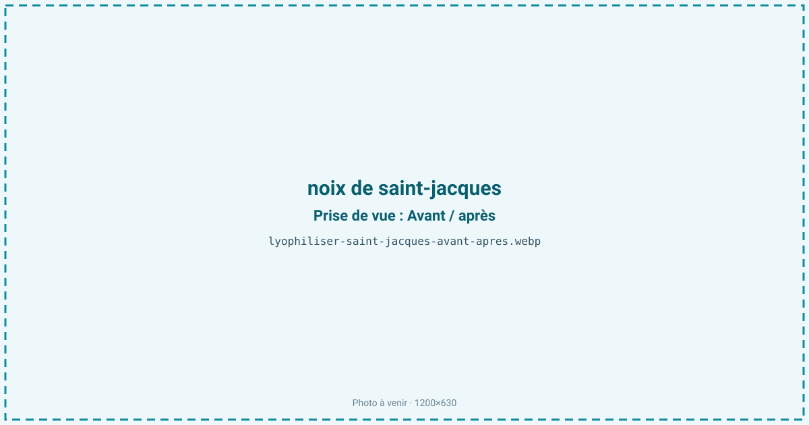
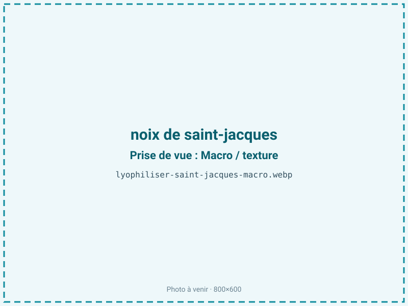
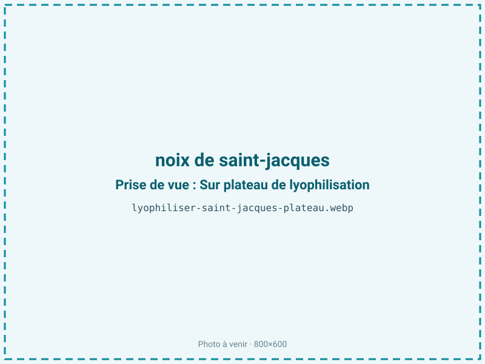
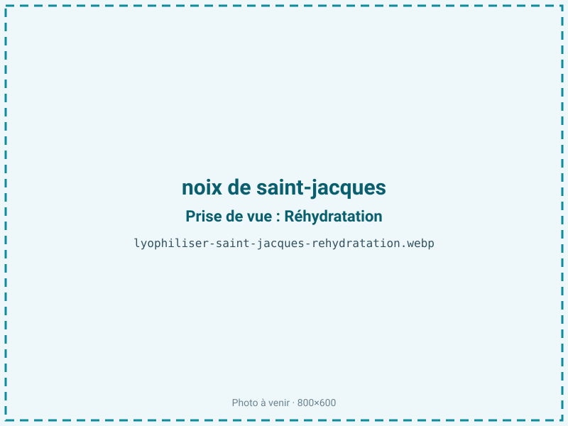

Lyophiliser des saint-jacques
La noix de saint-jacques est chère, saisonnière et périssable. Lyophilisée, elle se réhydrate en gardant son moelleux et sa douceur sucrée naturelle, sans la chaîne du froid du surgelé. En poudre, elle offre un assaisonnement marin fin. Un produit noble pour la gastronomie instantanée et l'épicerie fine.

En bref
Comment noix de saint-jacques se comporte à la lyophilisation
La saint-jacques se compose de deux parties au comportement opposé : la noix, muscle adducteur maigre (moins de 2 % de lipides) riche en glycogène et surtout en glycine, l'acide aminé qui lui donne sa douceur sucrée ; et le corail, gonade nettement plus grasse et pigmentée. C'est pourquoi on les traite séparément, leurs sensibilités à l'oxydation n'étant pas les mêmes. La noix contient environ 78 % d'eau, retenue par des protéines très hydrophiles : à la congélation, une solidification lente forme de gros cristaux qui rompent ces liaisons et libèrent l'eau à la réhydratation, donnant une noix qui « rend son eau » et perd son moelleux. Le front de sublimation progresse bien dans une noix étalée, mais un cœur épais reste piégé si l'on ne tranche pas. La glycine et le glycogène traversent le froid intacts, ce qui préserve la signature sucrée ; le corail, plus fragile, demande davantage d'attention à l'oxydation.
Paramètres de cycle
Séparer la noix du corail, qui n'ont ni la même teneur en eau ni la même sensibilité. Privilégier une noix « sèche », non trempée : les noix gorgées de solution de phosphates, trempage destiné à gagner du poids, relarguent leur eau au séchage et donnent un rendement trompeur et une texture spongieuse. Congeler rapidement à −30 °C : la congélation lente est ici l'erreur classique, elle fait « pleurer » la noix à la réhydratation. Trancher les grosses noix en médaillons de 8 à 10 mm pour un séchage homogène. Clayette de 20 à 25 °C en primaire, palier secondaire pour abaisser l'aw. Cible entre 0,30 et 0,45 : produit maigre, la saint-jacques accepte une aw basse, favorable à la conservation, sans risque de rancissement marqué. Contrôle d'aw en fin de cycle.
Pièges connus
- Séparer noix et corail, sensibilités différentes.
- Congélation lente = perte d'eau à la réhydratation.



Variantes & provenance
La provenance et l'espèce comptent : la coquille Saint-Jacques (Pecten maximus) des côtes françaises se distingue du pétoncle et des « noix » d'importation, plus petites et souvent congelées en mer. Le calibre commande l'épaisseur de découpe et la durée de cycle. La saison joue sur le glycogène : en pleine pêche hivernale, la noix est ferme et sucrée ; hors saison, avec un corail développé à l'approche de la reproduction, l'équilibre change. Avec ou sans corail, le produit final n'a ni la même couleur ni la même stabilité, le corail gras étant plus sujet à l'oxydation. Une noix fraîche non trempée donnera toujours un meilleur résultat qu'une noix décongelée.
Conservation & DLUO
Pour la noix seule, produit maigre, le facteur limitant est la reprise d'humidité plus que l'oxydation : une aw basse lui est favorable et prolonge la conservation sans risque de rancissement. Le corail, plus gras et pigmenté, se comporte différemment et s'oxyde plus vite : conditionné avec la noix, il tire la DLUO vers le bas et justifie une barrière azotée. Comptez 8 à 12 mois en sachet standard pour la noix. Un conditionnement barrière, opaque de préférence, la protège de l'humidité et de la lumière. Stockage à température ambiante, à l'abri de l'humidité ; le frais reste préférable si le corail est inclus. La reprise d'humidité se traduit par une noix qui ramollit et perd son croquant de surface avant réhydratation.
8 à 12 mois en sachet.
Estimez selon votre emballage :
Face aux autres procédés de séchage
Séchée à l'air chaud, la noix de saint-jacques durcit et perd sa douceur, la chaleur dégradant en partie la glycine et brunissant la surface : on obtient un produit corné très éloigné du moelleux attendu d'un produit noble. Le micro-ondes sous vide va plus vite mais durcit la noix et brouille sa mâche fine, et une réhydratation moins fidèle. La lyophilisation est la seule à rendre, après quelques minutes dans un liquide chaud, une noix qui retrouve son moelleux et sa mâche caractéristiques. Pour un produit vendu cher et jugé sur sa texture, cette fidélité justifie pleinement le procédé à froid.
Marchés & applications
La saint-jacques lyophilisée vise la gastronomie instantanée haut de gamme, les plats préparés premium et les coffrets de fêtes, où elle se réhydrate à la minute. En poudre, elle devient un assaisonnement marin fin pour sauces, veloutés et beurres composés. Les clients types sont la restauration gastronomique, les traiteurs, les épiceries fines et quelques marques de plats déshydratés premium. Criées et mareyeurs y trouvent un moyen de valoriser les noix déclassées ou les pics de débarquement en pleine saison.
- Gastronomie instantanée
- Poudre d'assaisonnement fin
Questions fréquentes — noix de saint-jacques
Pourquoi séparer la noix du corail ?
Parce que la noix est maigre et le corail gras : ils sèchent et s'oxydent à des rythmes différents, et les traiter ensemble abaisse la conservation de l'ensemble.
La saint-jacques garde-t-elle son goût sucré ?
Oui : la glycine et le glycogène qui portent sa douceur traversent le froid intacts, contrairement à un séchage à chaud qui les dégrade.
Pourquoi ma noix « rend son eau » à la réhydratation ?
C'est le signe d'une congélation trop lente, qui a formé de gros cristaux rompant les protéines. Il faut congeler rapidement à −30 °C.
Faut-il éviter les noix trempées ?
Oui : les noix gorgées de phosphates relarguent leur eau au séchage, faussent le rendement et donnent une texture spongieuse.
La noix retrouve-t-elle son moelleux ?
Oui, après quelques minutes dans un liquide chaud, si elle a été congelée rapidement et non trempée au préalable.
Combien de noix pour 100 g sec ?
Environ 5:1 sur chair, soit 500 g de noix pour 100 g de produit lyophilisé.
Peut-on lyophiliser le corail seul ?
Oui, mais il est plus gras et plus fragile : il demande une barrière azotée et se conserve moins longtemps que la noix.
Prochaine étape : envoyez-nous 200 g
Vous avez les repères de la saint-jacques. La suite logique : nous envoyer un échantillon et repartir avec une fiche technique sur votre produit — rendement, aw finale, coût au kilo.
Tester la saint-jacques — 250 à 500 €Déductible de votre premier lot.